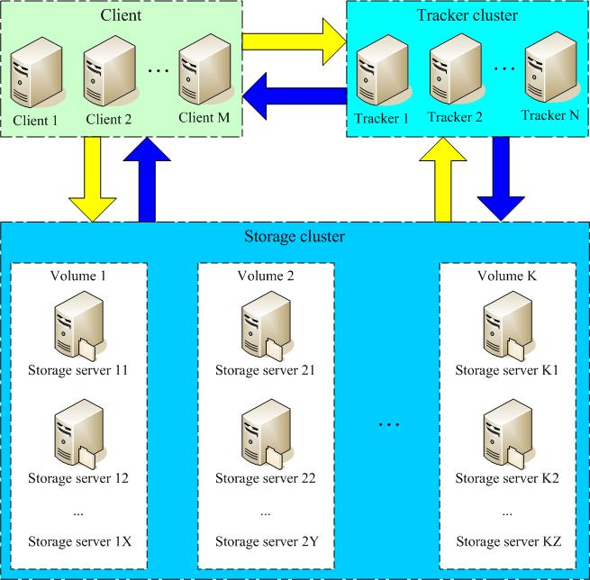
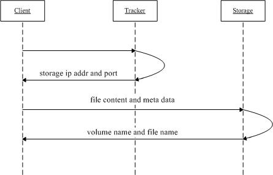
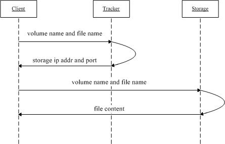

Docker部署FastDFS
1. FastDFS简介
FastDFS是一个开源的分布式文件系统，它对文件进行管理，功能包括：文件存储、文件同步、文件访问（文件上传、文件下载）等，解决了大容量存储和负载均衡的问题。特别适合以文件（建议：4KB ~ 500MB）为载体的在线服务，如相册网站、视频网站等等。 FastDFS系统有三个角色：跟踪服务器（Tracker Server）、存储服务器（Storage Server）和客户端（Client）。 Tracker Server：跟踪服务器，主要负责Group和Storage Server之间的负载均衡；每个Storage Server 在启动后会连接Tracker Server，告知自己所属Group 等信息，并保持周期性心跳。 Storage Server：存储服务器，主要负责容量和备份服务；以Group为单位，每个Group中可以有多个Storage Server，数据互为备份。 Client：客户端，即用于上传和下载所在工程部署的服务器。

2. FastDFS存储策略
为了支持大容量，存储节点（服务器）采用了分卷（或分组）的组织方式。存储系统由一个或多个卷组成，卷与卷之间的文件是相互独立的，所有卷 的文件容量累加就是整个存储系统中的文件容量。一个卷可以由一台或多台存储服务器组成，一个卷下的存储服务器中的文件都是相同的，卷中的多台存储服务器起到了冗余备份和负载均衡的作用。 在卷中增加服务器时，同步已有的文件由系统自动完成，同步完成后，系统自动将新增服务器切换到线上提供服务。 当存储空间不足或即将耗尽时，可以动态添加卷。只需要增加一台或多台服务器，并将它们配置为一个新的卷，这样就扩大了存储系统的容量。 FastDFS中的文件标识分为两个部分：卷名和文件名，二者缺一不可。
3. FastDFS文件上传和下载流程
3.1 上传文件交互过程
- Client询问Tracker上传到的Storage，不需要附加参数；
- Tracker返回一台可用的Storage；
- Client直接和Storage通讯完成文件上传。 
3.2 下载文件交互过程
- Client询问Tracker下载文件的Storage，参数为文件标识（卷名和文件名）；
- Tracker返回一台可用的Storage；
- Client直接和Storage通讯完成文件下载。 
4. FastDFS文件同步
写文件时，Client将文件写至Group内一个Storage Server即为写文件成功，Storage Server写文件完成后，后台线程会将文件同步至同Group内其他Storage Server。 每个Storage Server写文件件完成后，同时会写一份binlog，binlog里不包含文件数据，只包含文件名等元信息，用于后台同步，Storage会记录同Group内其他Storage同步的进度，以便重启后能继续同步；进度以时间戳的方式进行记录，所以最好能保证集群内所有服务器的时间保持同步。 Storage的同步进度会作为元数据的一部分反馈给Tracker，Tracke在选择读Storage时会以同步进度作为参考。
5. Docker部署FastDFS
Copy# 搜索镜像
docker search fastdfs
# 拉取镜像（已经内置Nginx）
docker pull delron/fastdfs
# 构建Tracker
# 22122 => Tracker默认端口
docker run --name=tracker-server --network=host --privileged=true -v /var/fdfs/tracker:/var/fdfs -d delron/fastdfs tracker
# 构建Storage
# 23000 => Storage默认端口
# 8888 => 内置Nginx默认端口
# TRACKER_SERVER => 执行Tracker的ip和端口
# --net=host => 避免因为Docker网络问题导致外网客户端无法上传文件，因此使用host网络模式
docker run --name=storage-server --privileged=true --network=host -v /var/fdfs/storage:/var/fdfs -e TRACKER_SERVER=192.168.3.248:22122 -e GROUP_NAME=group1 -d delron/fastdfs storage
# 查看容器
docker ps
# 进入tracker容器
docker exec -it tracker-server bash
# 修改配置信息，也可以直接挂载这个配置文件
vi /etc/fdfs/client.conf
----------------------------
tracker_server=你自己的ip:22122
# 重启tracker容器
docker restart tracker-server
6. 测试上传和访问
- 将图片上传到服务器/var/fdfs/storage/
- 进入storage-server
docker exec -it storage /bin/bash
cd /var/fdfs/
/usr/bin/fdfs_upload_file /etc/fdfs/client.conf test.jpg
# 记录返回的文件名称（卷名和文件名）信息
group1/M00/00/00/rBEAA2C2_mmAaiHtAAQNsWG90hY512.jpg
- 浏览器访问（注意防火墙）
http://192.168.3.248:8888/group1/M00/00/00/rBEAA2C2_mmAaiHtAAQNsWG90hY512.jpg
{kind=link}